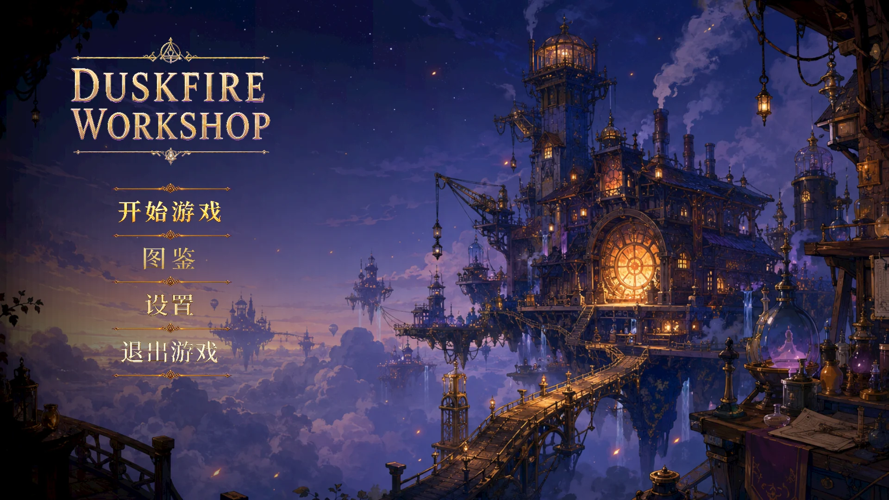
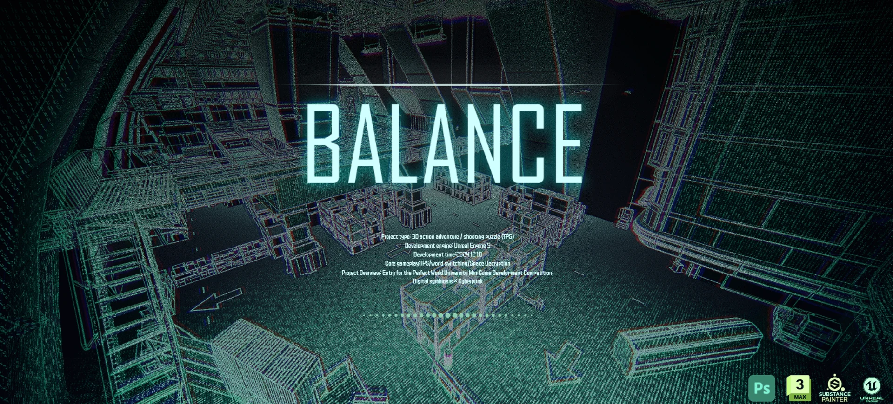
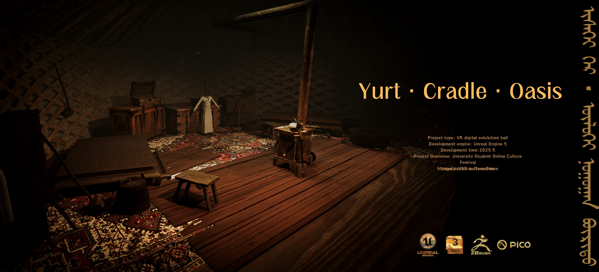
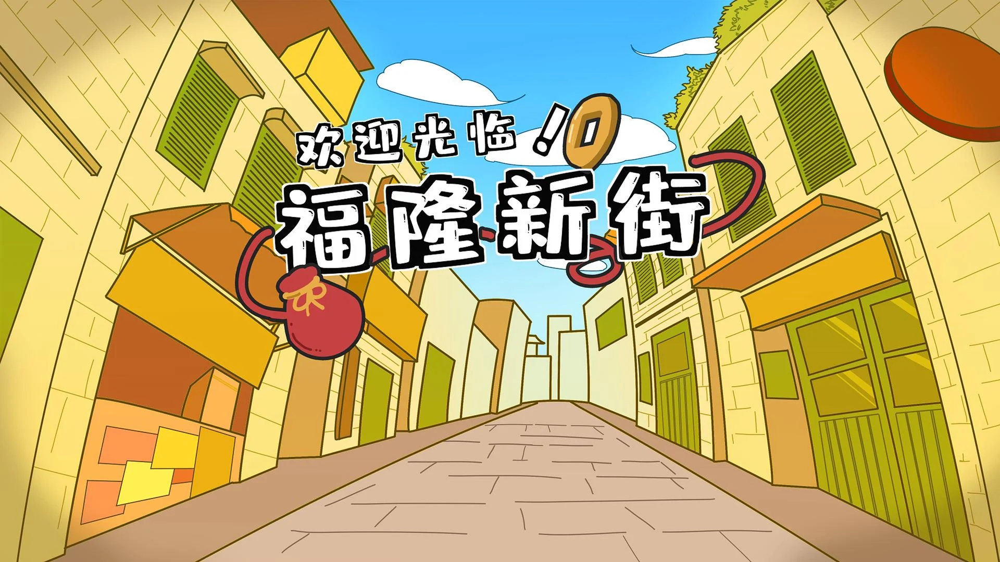
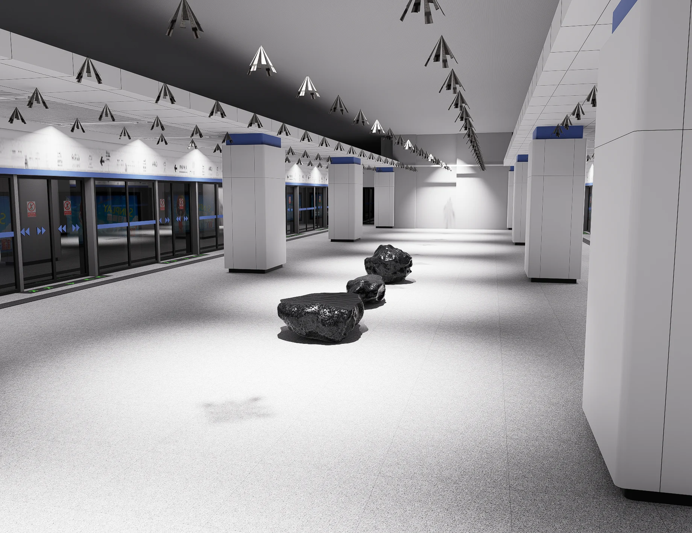
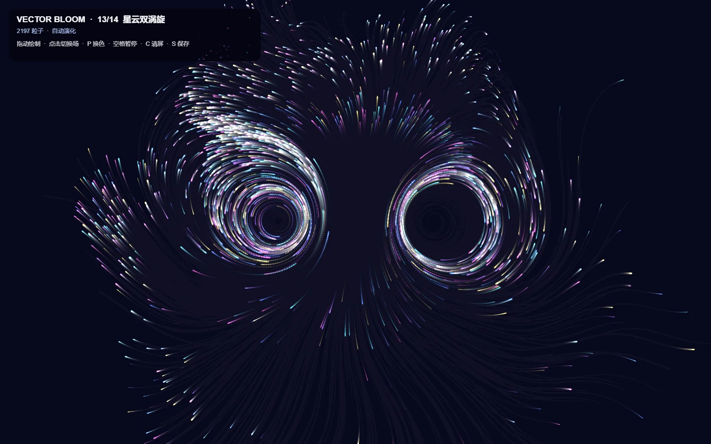
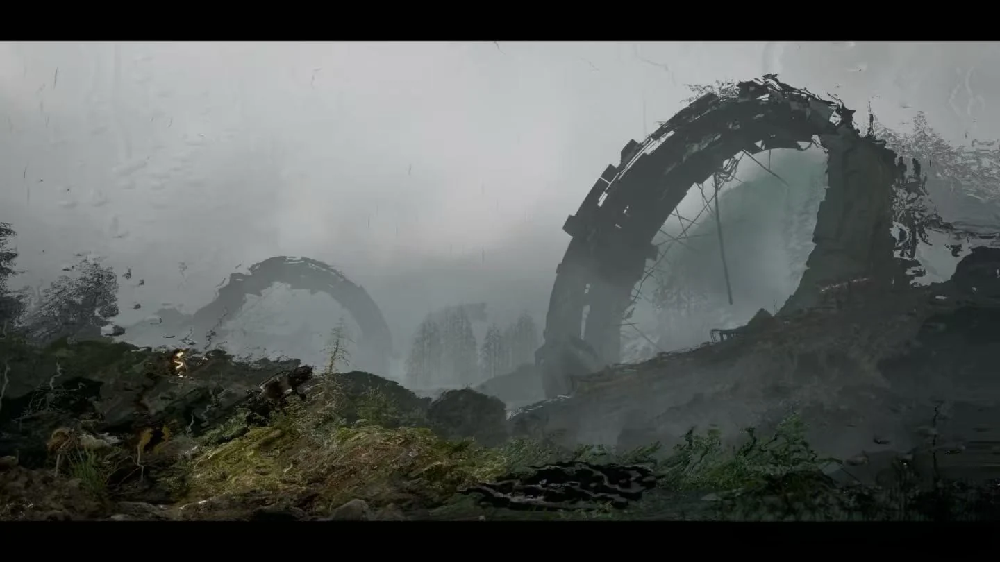
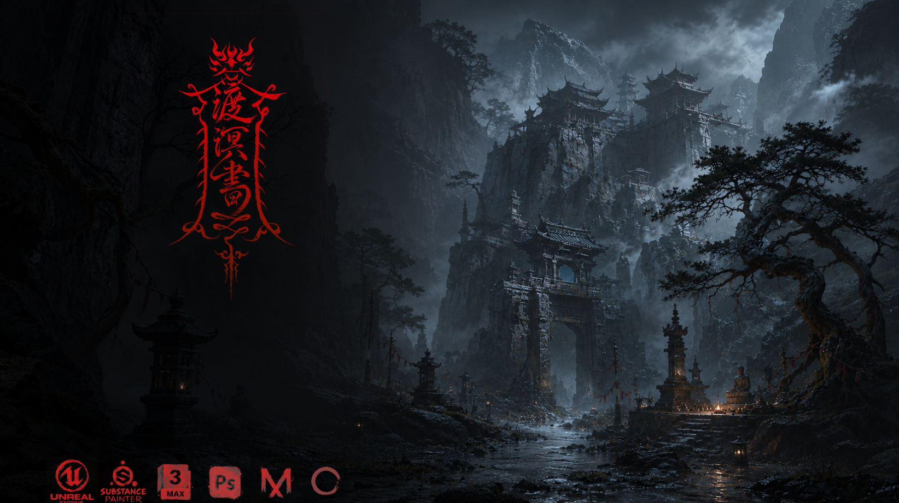

01 / 严肃游戏 / 卡牌 Roguelike2026
时间边界
把计划、执行、收尾与休息转化为卡牌选择，探索如何为未完成的事情划定边界。
围绕游戏、空间与交互展开的 10 个项目与实验。这里记录设计问题、实现过程，以及从概念走向可体验原型的尝试。
10 / 10 个项目

把计划、执行、收尾与休息转化为卡牌选择，探索如何为未完成的事情划定边界。

以双世界切换连接战斗、关卡与叙事，在维护系统的任务中追问秩序与情感。

用蒙古包、列车与展厅串联文化叙事，通过抓取、视频和位置触发组织 VR 参观体验。

将澳门街区的文化线索转化为探索与收集任务，以轻量游戏连接场地研究和公众体验。

将海岸的岩石意象带入深圳地铁，以可坐、可停留的公共艺术回应通勤中的短暂休息。

从粒子流场到摄像头与声音输入，探索规则、参数和实时反馈如何共同生成图像。
面向内容创作者组织对话、图像生成与作品浏览，把 AI 能力接入可操作的网页原型。

通过室外、废墟、风格化与太空场景练习灯光、氛围和镜头中的空间表达。
用文本指令检索参考视频，连接动作处理与动画资产生成，构建 UE5 编辑器中的制作流程。

通过空间布局、地标和战斗区域组织玩家路线，将三维资产制作与关卡推进结合。